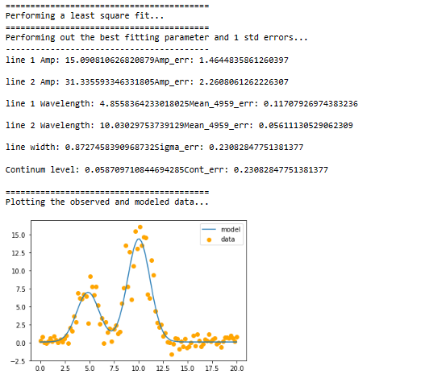
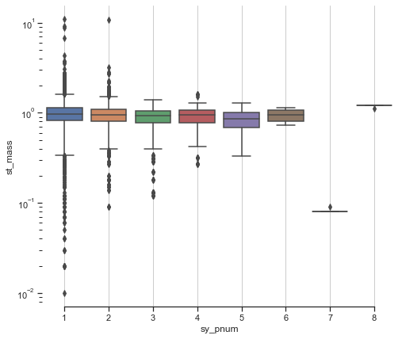

Jashanpreet Singh Dingra
Hey! I am Jashanpreet!
I am an amateur astrophysicist and a science student from India.
I have a deep passion for astronomy and spend most of my time analyzing astronomical data and conducting research on supernovae.
As the president of Dingrastro Club,
I have organized several events and webinars on various topics, including dark matter and Type 1a supernova.
(Never heard of that? Don't worry about it!
Here is the recordings). I stood third in 2021 International Astronomy and Astrophysics completition (IAAC), you can check my certificate here
Aside from my research, I enjoy astrophotography as a hobby,
capturing the beauty of the night sky through my telescope.
My ultimate goal is to become an astrophysicist and specialize in AGN galaxies, superonave, black holes, and dark matter.
Only recently, I wrote my first paper exploring the lightcurve of type Ia supernovae (see
Research below), where I investigated the redshift and reccessional velocity of the supernova
and discovered a nova with a reccessional velocity much close to speed of light with errorbar. All in all: Very exciting, check it out!
Prior to that, I completed my secondary education from Kaintal School (ICSE) and am currently in high school as a non-medical student at The Millennium School (CBSE)
, preparing for the JEE examination for admission to the prestigious IISC Bangalore, India.
On this website, you will find my research, writings, and musings about the universe,
and I hope to inspire others to share my passion for astrophysics.
Research
In my research, I aim at building a better understanding - let's say insight - into the world of supernova and AGN galaxies.
I will be sharing my research on type Ia supernova data from SDSS3.
Type Ia supernovae are a particular type of exploding star that has a characteristic light curve with high energy iron decay followed by cobalt.
In my research, I have focused on comparing the recessional velocity of these supernovae with their distance from us.
This is an important analysis as it can help us better understand the expansion of the universe and its acceleration.
To carry out this analysis, I have used data from SDSS3, which is a large-scale astronomical survey that has been mapping the universe since 2008. By studying the light curves of these type Ia supernovae and their spectral features, I have been able to calculate their recessional velocity and compare it with their distance from us. This analysis has helped me to gain insights into the expansion rate of the universe and the nature of dark energy.
In addition to my work on type Ia supernovae, I have also made a 100-year prediction of the opposition of Mars with Earth. This involved using data from the Mast Archive and SDSS to create a model of the positions of the planets in the solar system over time. This work has provided a better understanding of the motions of the planets in our solar system and can be used to improve our predictions of future celestial events.
Finally, I have also worked on some little projects related to exoplanets. Exoplanets are planets that orbit stars outside of our solar system and are an exciting area of research in astronomy. My work in this area has focused on using data from telescopes such as the Kepler and TESS missions to identify and characterize exoplanets. This work has helped to expand our knowledge of the types of planets that exist beyond our solar system and the conditions that may be necessary for life to exist on other planets.
Overall, my research has focused on using observational data to gain insights into the workings of the universe and our place in it. By studying type Ia supernovae, the motions of planets in our solar system, and exoplanets, I have contributed to our understanding of the cosmos and opened up new avenues for future research.
Papers
SDSS3: Type Ia Supernovae redshift ≤ 0.5 analysis on the basis of there respective distances

Jashanpreet Singh Dingra
Research paper
Here we discovered a supernova with reccessional velocity 0.8 times the speed of light and is 1000-1500 Mpc away from us.

Astronomy data modelling for gaussian profile.
Jashanpreet Singh Dingra
View code
Exoplanet analysis
Jashanpreet Singh Dingra (2021)
View code

Teaching
I have always been intrigued by the vast expanse of our universe and the mysteries it holds. It is a subject that never fails to captivate the minds of both children and adults alike. Recently, I had the opportunity to collaborate with the AACK Astronomy Club of Kosovo to organize an international webinar on space science. The webinar was a tremendous success, and I was thrilled to see so many enthusiastic young minds eager to learn about the wonders of space. Together, we delved into the depths of the universe, exploring everything from the planets in our solar system to the farthest reaches of our galaxy. Through this collaboration, I was able to provide a unique learning experience for the children in my neighborhood, and I am grateful for the support and resources provided by the AACK Astronomy Club of Kosovo. The webinar not only provided an opportunity to learn about space science, but it also helped to cultivate a sense of curiosity and wonder among the children. I love to encourage other students to explore the world around them. Collaborations like these provide an excellent opportunity to share knowledge and ideas with others, and I look forward to future collaborations with the AACK Astronomy Club of Kosovo and other organizations that share our passion for space science.
Interested people can engage with us by joining my astronomy club via club website